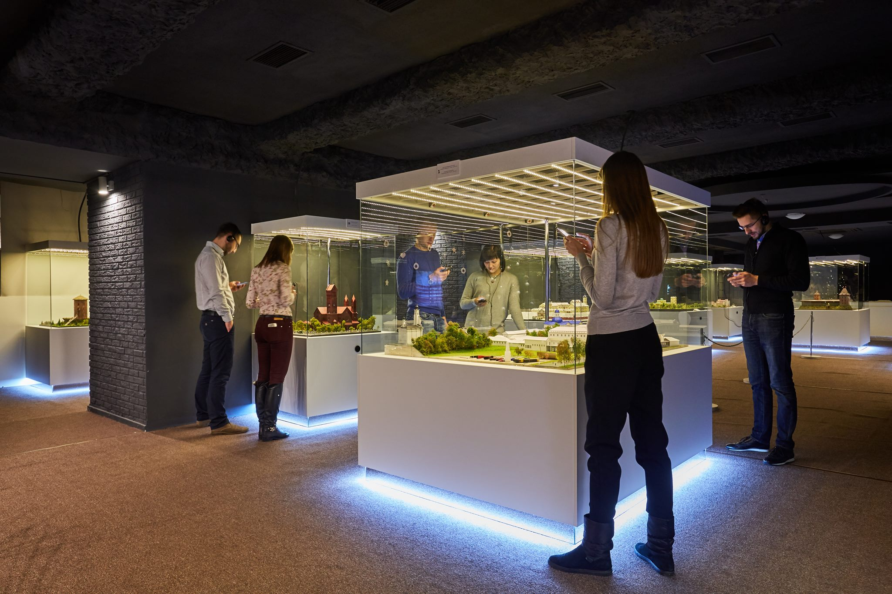

О музее

Музей «Страна мини» – это первый в Беларуси музей архитектурных миниатюр белорусских достопримечательностей, с каждой из которых связаны знаковые для страны события. Вокруг некоторых макетов воссозданы исторические сцены, которые позволят посетителям музея проникнуться атмосферой прошлого.
Что представляет из себя музей миниатюр в Минске
Макет каждой достопримечательности — это произведение искусства. Каждый экспонат имеет свою интерактивную "фишку". В экспозиции представлены самые значимые архитектурные достопримечательности, в том числе малоизвестные.
В музее работают экскурсоводы. В ходе экскурсии, помимо исторических фактов о достопримечательностях, гостям «Страны мини» рассказывают захватывающие легенды о знаменитых местах. Также посетители могут бесплатно воспользоваться аудиогидом или заранее скачать приложение-гид на смартфон (Android и IOS). Кроме информации об экспонатах, аудиогид дает туристам полезные рекомендации, как добраться до достопримечательности и где остановиться.
Помимо основной экспозиции в «Стране мини» есть фотозона в виде самобытной белорусской хатки, зона отдыха с кафе и бесплатный Wi-fi. Тут же, в самой аутентичной сувенирной лавке Минска, можно запастись оригинальными подарками для друзей от белорусских ремесленников по вполне демократичным ценам.
Экспозиция
Экспозиция музея состоит из 20 макетов самых значимых достопримечательностей Беларуси, в том числе и малоизвестных. Памятники были отобраны по их архитектурным достоинствам и значению для истории Беларуси. Среди них — Несвижский замок, Мирский замок, Кревский замок, Свято-Успенский Жировичский монастырь, Костел Святого Симеона и Святой Елены, Брестская крепость. Каждый макет — это произведение искусства, имеющий свою интерактивную «фишку». Посетитель может сам выбирать режим «день» и «ночь» на макете, нажав интерактивную кнопку на стенде. Макеты сделаны из пластика, в детальной точности повторяют реальные памятники архитектуры, многие из которых включены в список Всемирного наследия Юнеско. Над созданием макетов работала команда из 25 человек в течение 8 месяцев. В целом на само оформление каждого макета уходило около месяца труда одного специалиста.
Для посетителей сделана специальная фотозона, оформленная в виде Белорусской национальной хатки.
Мини-экскурсия
Свято-Успенский Жировичский монастырь
Перед вами макет Свято-Успенского Жировичского мужского монастыря, который является духовным центром православия на территории Беларуси. Нет-нет, вам не показалось – макет не достроен. Но не просто так, а чтобы вы увидели своими глазами этапы его создания. Здесь ещё виднеется основа из ДСП, белые стены зданий из пластика, а также показано, как на макете создаётся трава.
Обратите внимание, архитектурный комплекс Жировичского монастыря включает в себя несколько храмов, колокольню, здание семинарии, жилые и хозяйственные постройки. Согласно преданию первую деревянную церковь на этом месте построили ещё в XV веке после того, как пастухи обнаружили здесь чудотворную икону Божией Матери в кроне дикой груши. Но этот храм сгорел в XVI веке. Позже здесь возвели уже каменную церковь, при которой возник мужской православный монастырь. Однако, в 1655 году он был сожжен. Удивительно, но во время пожара чудотворная икона почти не пострадала.
Православным Жировичский монастырь был не всегда, в начале XVII века его передали униатам и только в 1839 году вернули Православной Церкви. Центром этого архитектурного ансамбля является Свято-Успенский собор. Он соединяет в себе черты барокко и классицизма, а его синий купол виден издалека. В этом храме и находится величайшая святыня Беларуси – чудотворный образ Жировичской Божией Матери. Это самая маленькая икона в мире из почитаемых икон Богородицы. Она была вырезана из яшмы светло-серого цвета в форме небольшого овала.
Мирский замок
Мирский замок – один из самых известных памятников оборонительного зодчества на территории Беларуси. Он находится в городском посёлке Мир Гродненской области и в наши дни является единственным светским сооружением в стиле самобытной белорусской готики. Первыми хозяевами Мирского замка были Ильиничи, которые и начали его строительство.
Замок возвели в первой половине XVI века. По форме он напоминает квадрат со сторонами около 75 метров. Толщина замковых стен примерно 3 метра, а их высота – 10-12 метров. По углам крепости расположены пятиэтажные башни высотой 25 метров, которые выходят за пределы стен. Обратите внимание, в центре западной стены есть ещё одна башня — шестиэтажная с деревянными въездными воротами, которые когда-то были единственным входом в замок. При опасности, для защиты ворот опускали металлическую решётку. В подвале шестиэтажной башни размещалась тюрьма, а на втором этаже была каплица.
После того, как в 1568 году хозяевами этих земель стали Радзивиллы, замок предстал в новом обличии. Его окружили земляным валом и рвом, который можно было пройти только с помощью подъёмного моста. На территории замка построили трёхэтажный дворец, в подземелье и на первом этаже которого был склад с продовольствием и оружейная. На втором этаже – лакеи и администрация Мирского графства, а на третьем – княжеские покои. Известно также, что жители замка могли воспользоваться лифтом того времени, который проходил через прорезанные в полах дыры. Он представлял собой большую плетёную корзину, которую слуги тянули за верёвки. Мирский замок не раз брали в осаду и штурмовали, комплекс был задействован практически во всех войнах, которые проходили на наших землях.
Бресткая крепость
Мемориальный комплекс «Брестская крепость – герой» - крупнейший памятник мужеству советского народа в годы Великой Отечественной войны. Но история крепости относится ещё к XVIII веку. Именно в эту эпоху возникла идея возведения защитных сооружений с целью обороны у слияния рек Буга и Мухавца. Ход Отечественной войны 1812 года показал важность постройки крепости на этом месте. Поэтому в 1833 году Николай I утвердил проект, созданный военными инженерами по личному поручению императора. Крепость была основана 1 июля 1836 года и спустя 6 лет уже значилась как действующая. Она состояла из цитадели и трёх защищавших её укреплений общей площадью 4 км² и протяжённостью главной крепостной линии более 6 километров. Цитадель представляла собой две двухэтажные казармы из красного кирпича с толщиной стен около 2 метров.
В годы Второй Мировой войны бойцы Брестской крепости невероятно мужественно и стойко сражались за родину. Именно сюда ранним утром 22 июня 1941 года были сброшены первые вражеские снаряды, положив начало самой кровопролитной войне в истории. Обратите внимание, на макете хорошо видна глубокая воронка. Дело в том, что немецкие войска при штурме Крепости использовали самоходные мортиры «Карл», вес снаряда которых был около 2 тонн. Поэтому после обстрелов в грунте возникли глубокие воронки. В них после окончания боевых действий сбрасывали тела советских бойцов. 8 дней пограничники Брестской крепости защищали подступы к городу и не давали войскам вермахта захватить крепость.
В честь воинов, мужественно сражавшихся здесь во время войны, с 1965 года Брестская крепость носит звание «Крепость-герой». В 1971 году указом правительства БССР в Брестской крепости был открыт мемориальный комплекс, центром которого является монумент «Мужество». В состав комплекса также входит Музей обороны Брестской Крепости и площадь Церемониалов. На территории комплекса находится трёхъярусный некрополь, в котором спят вечным сном 850 солдат-героев. Перед развалинами инженерного управления пылает Вечный огонь Славы - память потомков о мужественных защитниках крепости.
Национальный театр оперы и балета
Единственный в Беларуси театр оперы и балета находится в Минске на площади Парижской Коммуны. Долгое время у труппы театра не было собственного помещения, поэтому в начале 1930-х годов руководство БССР приняло решение о возведении для него здания на одном из самых высоких холмов города – Троицкой горе, известной благодаря тому, что здесь был рынок.
Согласно первоначальному плану зрительный зал был рассчитан на 2250 мест с возможной трансформацией в амфитеатр, однако этот проект был слишком дорогостоящим. Поэтому в 1934 году строительство продолжили в стиле советского конструктивизма уже по проекту другого архитектора Иосифа Лангбарда. Открытие собственного здания театра состоялось 10 марта 1939 года премьерой оперы «Міхась Падгорны».
В первые дни Великой Отечественной войны на здание упала авиабомба, которая разрушила зрительный зал. Позже представители оккупационной власти устроили в этом здании конюшни, а ценности вывезли в Германию.
После войны реконструкцией здания руководил сам Иосиф Лангбард. Также по его проекту в 1949 году вокруг театра был заложен парк. За свою безупречную репутацию ещё в 1940 году театр получил звание «Большой».
За всю историю существования театра на его сцене было поставлено 20 тысяч спектаклей и состоялось более 200 премьер. Сегодня зрительный зал Большого театра оперы и балета может принять 1137 зрителей. Его внутреннее убранство поражает своей красотой. Особенная гордость театра – его современная сцена-трансформер. Она состоит из 21 площадки, которые могут менять угол наклона, подниматься и опускаться.
Заключение
"Страна мини” - первый в Беларуси музей архитектурных миниатюр, в котором за несколько часов вы можете получить представление о Беларуси, узнать что-то новое об известных достопримечательностях и просто отлично провести время. На сайте расположена лишь очень малая часть того, что можно увидеть в музее, ведь гораздо интереснее самому приехать и всё увидеть.